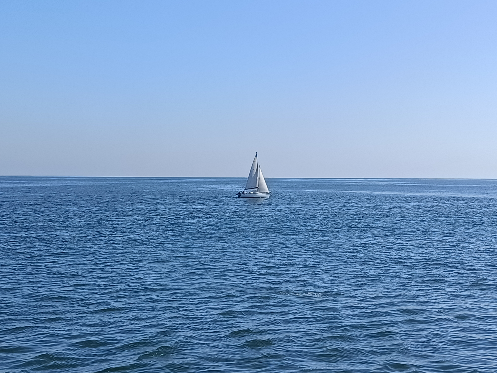
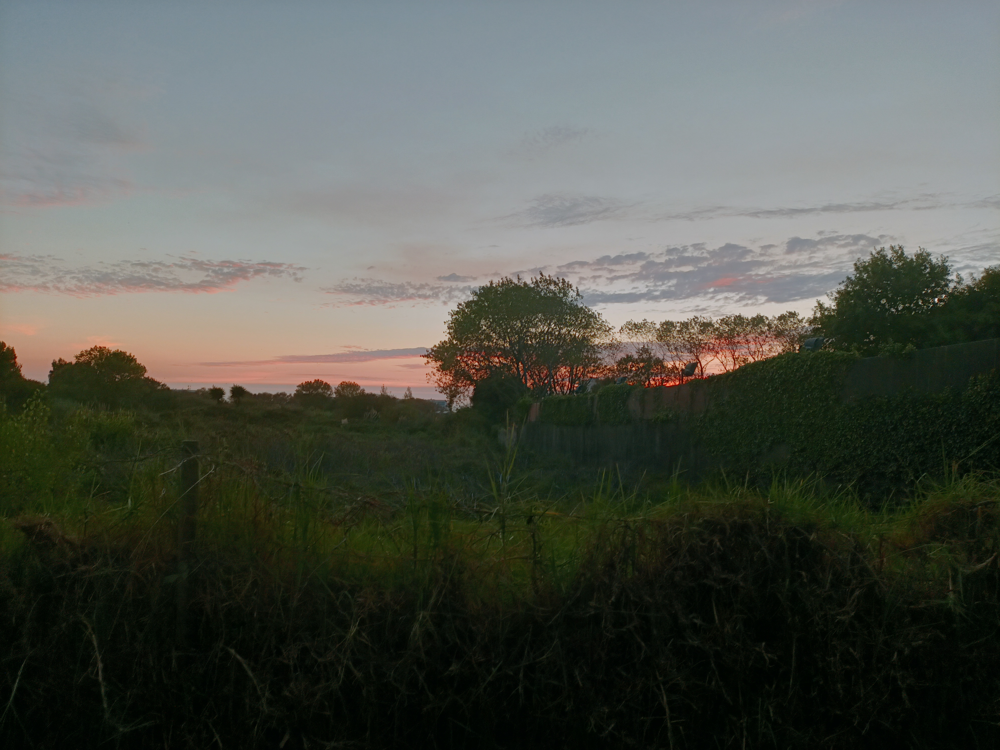
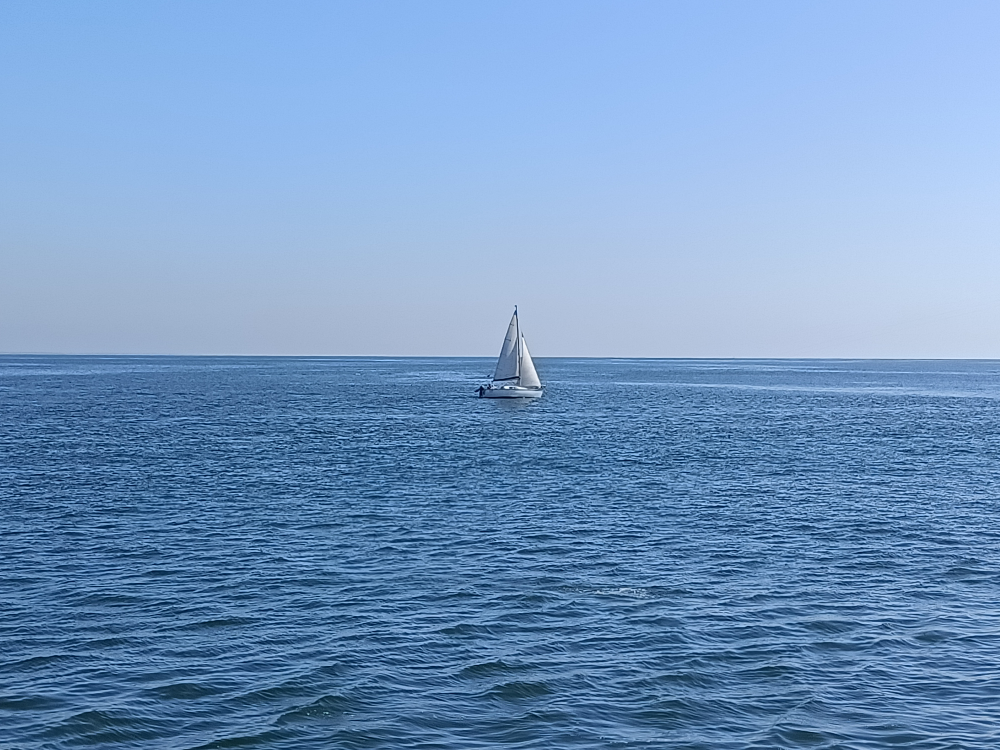
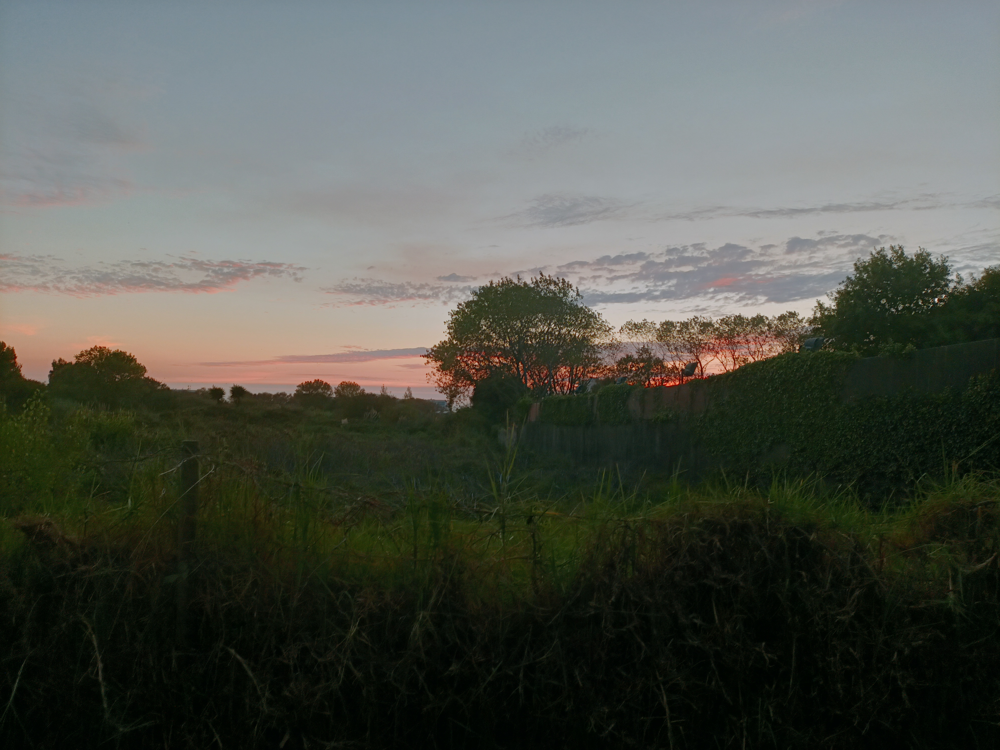
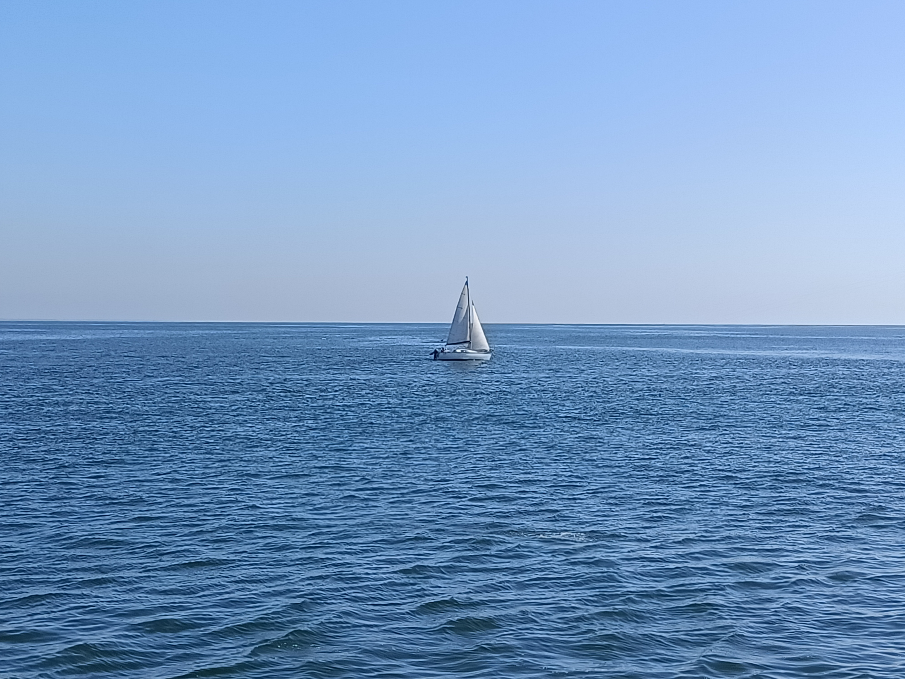
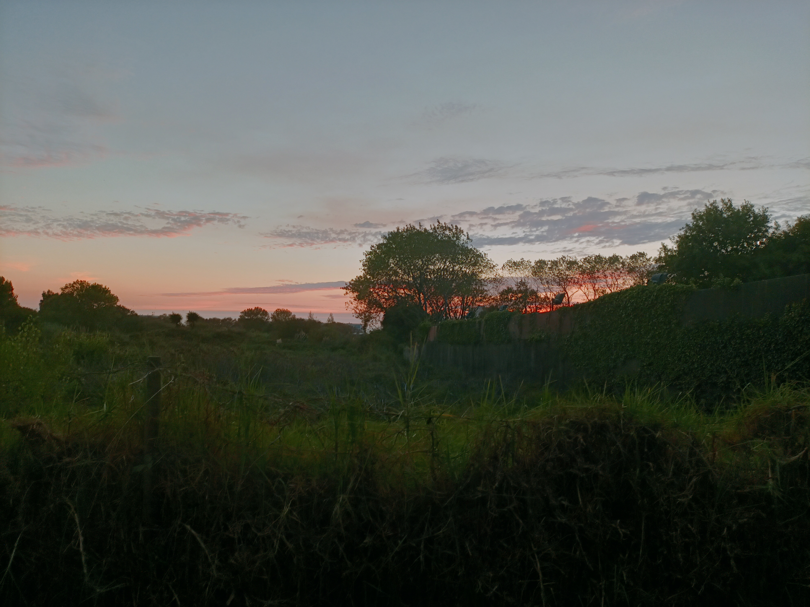

Venham conhecer a paixão que o João tem pela fotografia!!!


Venham conhecer a paixão que o João tem pela fotografia!!!
Para mim a fotografia, é a melhor solução para quando queremos captar os melhores momentos da nossa vida.
Quando eu era pequeno, antes de ter um irmão, passava sempre os fins de semana em casa dos meus avós paternos.
Nos dias em que eu tinha a minha tia lá em casa, eu tirava-o sempre da mão.
No momento em que eu o tinha
na mão tirava fotografias a tudo o que me parecia à frente.
Com o passar dos anos fui tirando cada vez mais fotografias, até que houve um dia que a minha tia vira-se para mim e pergunta-me: João
posso ver as tuas fotografias? E eu virei-me para a minha tia e disse: Sim, podes ver.
Agora vou vos mostrar um pequeno vídeo feito por mim